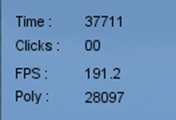
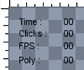
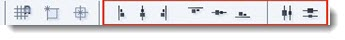
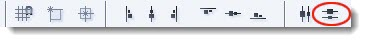
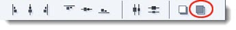
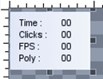

Introduction

With this tutorial you will learn some simple scripts that will be used
to display the game FPS and polygon count as a overlay or HUD (Heads Up Display). We will also cover
how to capture a mouse event and put it to good use while a schedule
timer is used to constantly update the text displayed on our screen.
Suggested Reading:
Covered in this tutorial:
- Display text on the Game screen
- Show how to detect a mouse click
- Simple use of the schedule timer
- Show game fps and poly count
- Locate and Edit the playGui
Setting Up
Open up your tutorial project and start the GUI editor as we have in
the previous tutorials in the series. This time we are going to edit
the main playGui.gui. This GUI is the main play screen overlay where
your in game HUD for ammo and other player feedback is displayed.
The main GUI control in this case is not GuiControl that we
used in a dialog. This one uses GameTSCtrl, which is a GUI for
rendering 3D scenes. Head to the file menu File->Open From File and
point your file browser to game/art/gui. Load the file playGui.gui.
This GUI may have a few controls already but we shall ignore them for now.
Adding Text Controls
STEP 1: For this project we are only going to need to display
text so add a new GuiTextCtrl from the control Library. Set its
property to:
property text: Time
Next resize it to fit the text content. Ensure this control
is selected, then copy andpaste a new control to the right of it and set
this controls property to:
property text: 00
property name: lblTime
STEP 2: Select both of the text controls then copy and paste them three more times. Set their properties as follows:
Below Time
Left Text property text: Clicks:
Right Text property text: 00
Right Text property name: lblClicks
Below Clicks
Left Text property text: FPS
Right Text property text: 00
Right Text property name: lblFps
Below FPS
Left Text property text: Poly
Right Text property text: 00
Right Text property name: lblPoly

If you need aid in lining your text controls, the editor has
a few tools to help you. The selected control can be moved / nudged by
pressing the up/down/left/right keys. The tool bar also has a few icons
for aligning up the controls:

Select all the left text controls and press the Align left icon:

This will make their left edges line up nice and neat. If you want the text controls to be evenly spaced vertically, press the Distribute Vertically icon:

Get to know these layout helpers as they will save you time in a larger GUI. Remember to make a save!
Optional: If you think the black text will not show up in your project you could always add a GuiPanelCtrl, resize it, and send to the back by pressing the tool bar Send To Back icon.

It should look like this:

Save and close down your project.
HINT: If you can not see all the numbers or text in a
GuiTextCtrl, remember to resize the control until you can see all of
its contents.
Configuring Text Output
Now our text controls are in place we need a little bit of script to bring it to life.
STEP 1: Open your game/scripts/gui/playGui.cs file in your favorite editor and at the end of the first function (function PlayGui::onWake(%this)) add this
line:
schedule(100,0, updateDisplay);
This method is a type of timer. When the specified amount of time has passed, a call is made to the function.
| schedule( waitTime , objID or 0, functionName, arg0, ... , argN ) |
Use the function to schedule functionName to be executed with optional arguments at time waitTime (specified in milliseconds) in the future. This function may be
associated with an object ID or not. If it is associated with an object
ID and the object is deleted prior to this event occurring, the event
is automatically canceled.
Syntax
schedule(U32 waitTime, SimObject* objID, string functionName, arg0, ... , argN );
- waitTime: The time to wait (in milliseconds) before executing functionName.
- objID: An optional ID to associate this event with.
- functionName: An unadorned (flat) function name.
- arg0...argN: Any number of optional arguments to be passed to functionName.
Returns
S32 Returns a non-zero integer representing the event ID for the scheduled event.
Examples
// Call the updateDisplay function in 100 milliseconds
schedule(100,0, updateDisplay);
|
This is how the function should look with our new line of code at the end.
function PlayGui::onWake(%this)
{
// Turn off any shell sounds...
// sfxStop( ... );
$enableDirectInput = "1";
activateDirectInput();
// just update the action map here
moveMap.push();
// hack city - these controls are floating around and need to be clamped
schedule(0, 0, "refreshCenterTextCtrl");
schedule(0, 0, "refreshBottomTextCtrl");
schedule(100,0, updateDisplay);//our new schedule
}
This schedule is a one-off call, but we want to constantly update our
display with the new values. We make this happen by calling the
schedule method again from our updateDisplay function.
STEP 2: At the end of the script page add the following new function:
function updateDisplay()
{
lblTime.setValue((getRealTime()/1000));
schedule(100,0, updateDisplay);
}
Here we have made another call to the schedule which will give
us a loop timed at 100ms updating any statements in this function. The
first line sets the GuiTextCtrl named lblTime text content to getRealTime() which is the current time in milliseconds.
STEP 3: Next we will set up the text to display the current fps
and poly count of the scene. This is done by looking at the global
variables $fps::real and $GFXDeviceStatistics::polyCount. Add the following lines of script after the time statement:
lblFps.setValue($fps::real);
lblPoly.setValue($GFXDeviceStatistics::polyCount);
Your function should now look like this:
function updateDisplay()
{
lblTime.setValue((getRealTime()));
lblFps.setValue($fps::real);
lblPoly.setValue($GFXDeviceStatistics::polyCount);
schedule(100,0, updateDisplay);
}
Save your script and run your project. All being well and you have no
errors, your display should show the time in ms, fps and poly count.
Next we need to count the mouse clicks. Close down your project so we
can add some more script.
STEP 4: To count our mouse clicks we need a way to tell the
system that our mouse button has been pressed. We do this in the same
way as we did for checking for a pressed key, with the bind method.
Open your game/scripts/client/default.bind.cs file for editing. At the end of this file add the following:
function mouseFire()
{
// add the value of one to our “click” text control
lblClicks.setValue(lblClicks.getValue()+1);
}
moveMap.bind(mouse, "button0", mouseFire);
We have set the mouse button0 to call mouseFire function every time its
pressed by adding it to the bind method. Run the project and click the
left mouse button. The mouseFire() function sets the text controls body text every
time its called, this counts the mouse down and mouse up events.
To stop this and only count the mouse down even we need to modify the
function slightly. Close your project and edit the file as follows:
function mouseFire(%val)
{
if(%val)
{
//mouse down
// add the value of one to our “click” text control
lblClicks.setValue(lblClicks.getValue()+1);
}else
{
//mouse up
}
}
Now the mouseFire function only counts the mouse down event. Save your files, run the project and test the mouse down counting.
Conclusion
In this tutorial, you learned the following concepts:
- Display text on the Game screen
- Show how to detect a mouse click
- Simple use of the schedule timer
- Show game fps and poly count
- Locate and Edit the playGui
The next Tutorial we will create a more advanced GUI window using List Controls.
|